Лабораторна робота №3
Тема. Проектування Web-документів. Сторінки списків та меню.
Мета. Створення Web-сторінок зі списками та меню Web-проекту. Вивчення HTML тегів та правил CSS роботи зі
списками та посиланнями.
Розробити Web – сторінку виведення інформації у вигляді списків та Web –
сторінку з меню для Web –проекту. На Web –сторінці студент виводить придуману
інформацію фірму(підприємство) згідно варіану у вигляді списків. Списки пинні бути
нумеровані, макеровані та із визначеннями. Сторінка меню повинна бути із
гіпераосиланнями на поточну сторінку (внутрішне посилання) та інші сторінки Web –
проекту. У всіх розроблених раньше сторінах добавити посилання на сторінку меню.
При розробці сторінки студент може використовувати будь–які теги мови HTML та
правила CSS. Для кожного студента, згідно варіанту, задається набір обов’язкових тегів
та їх атрибутів, що повинні бути присутні на Web – сторінці. Задані атрибути можна
замінити правилами CSS

Код до завдання
 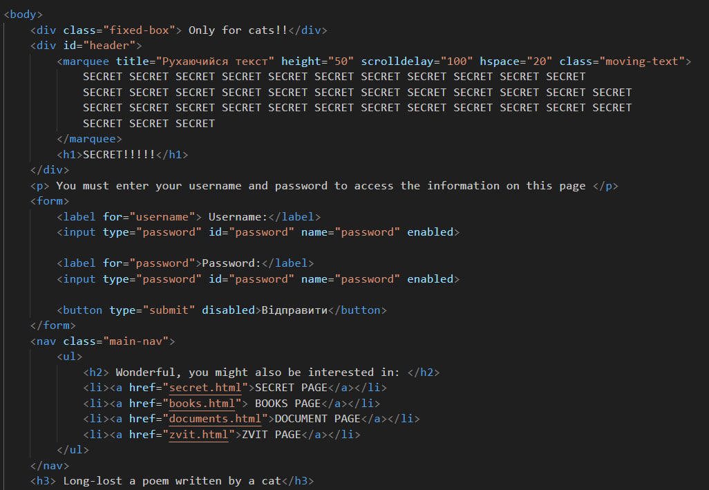
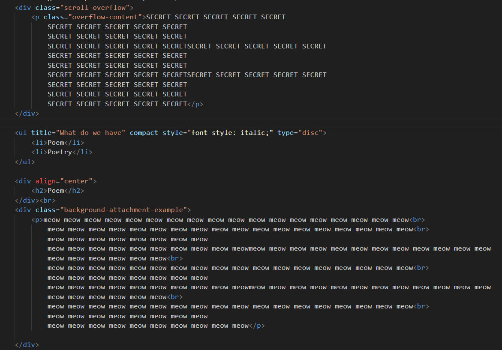
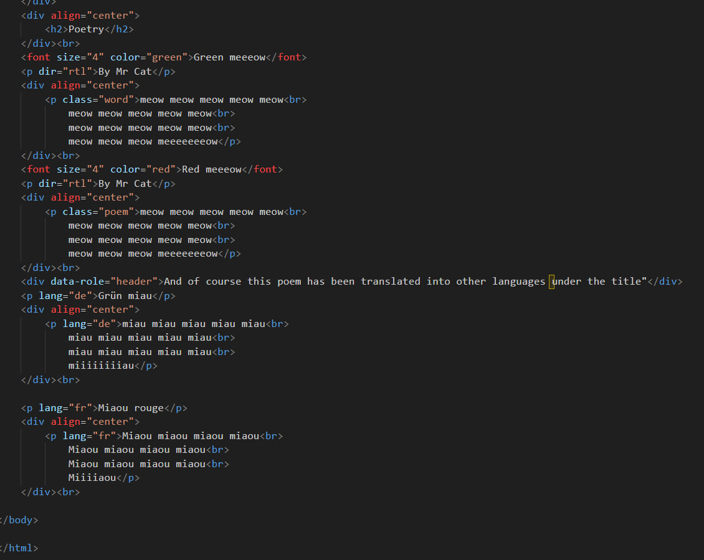
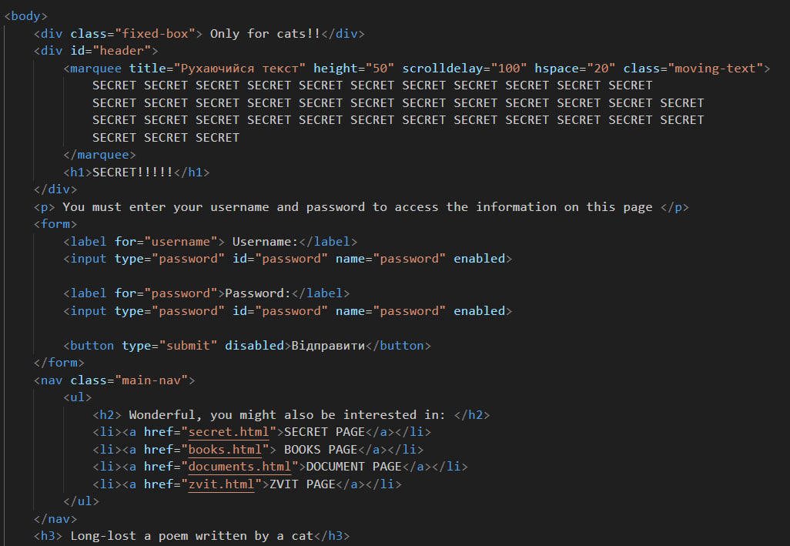
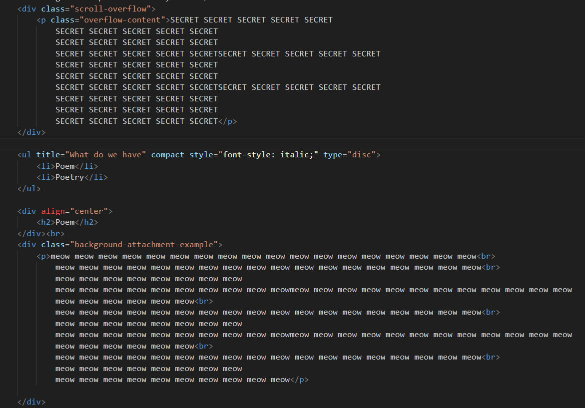
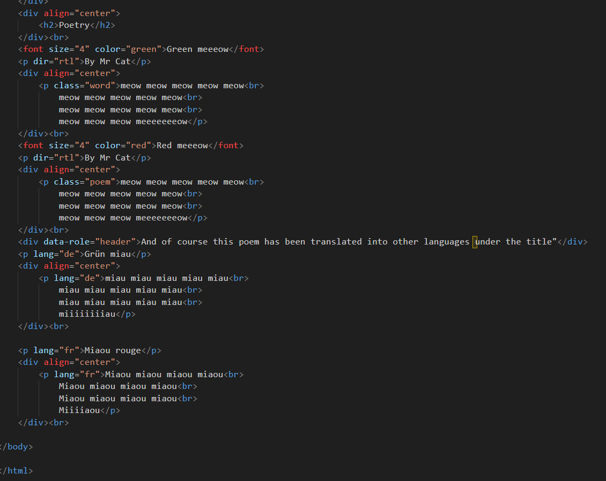
Код до завдання
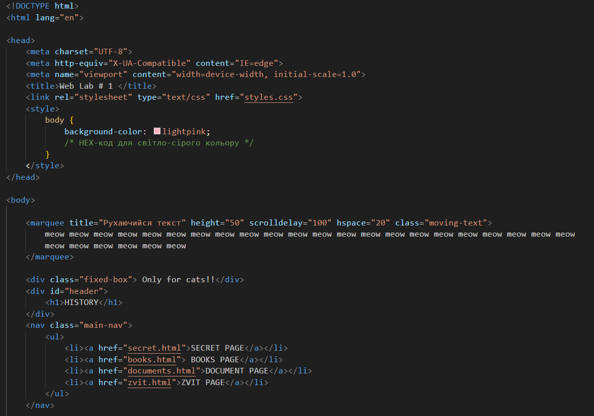 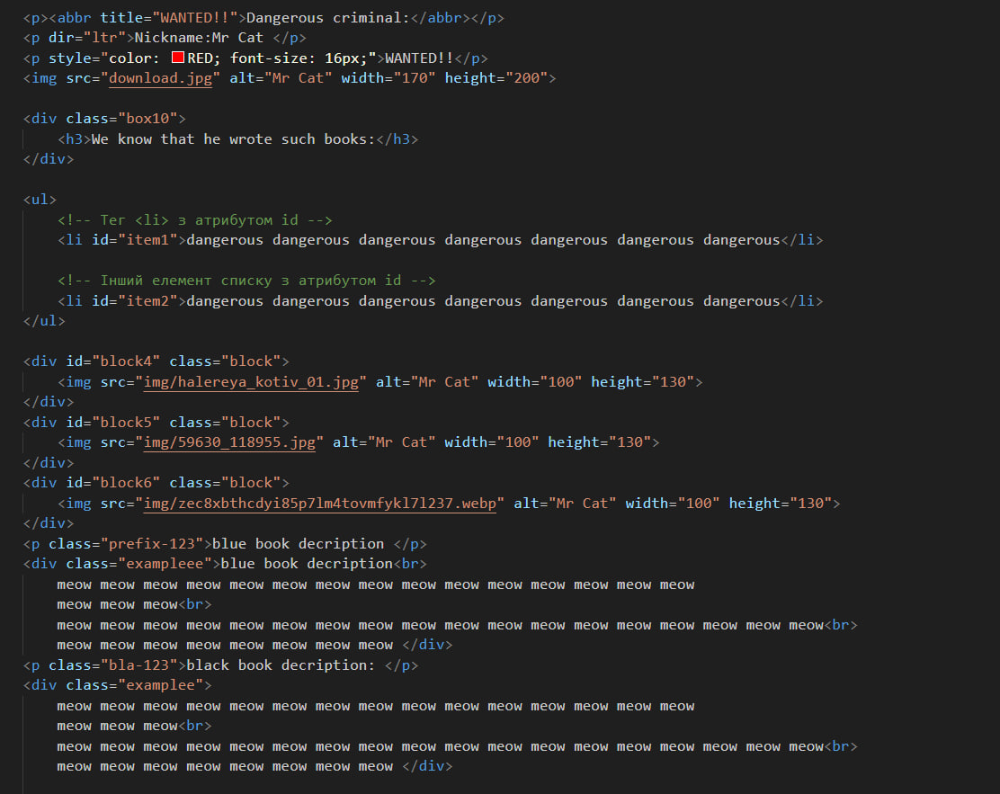 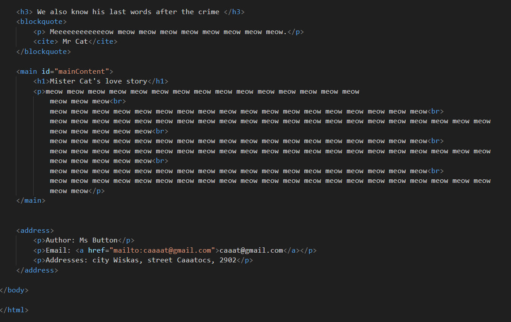
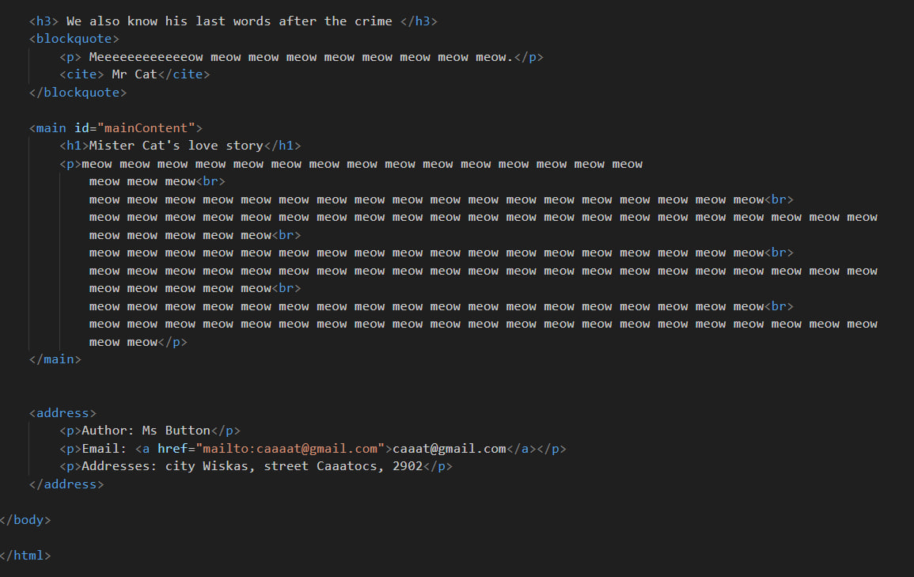
Код до завдання
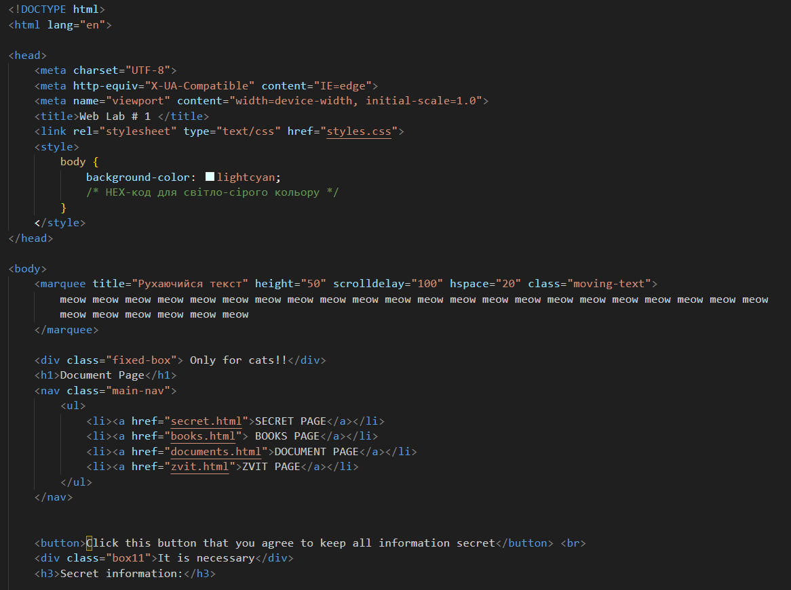 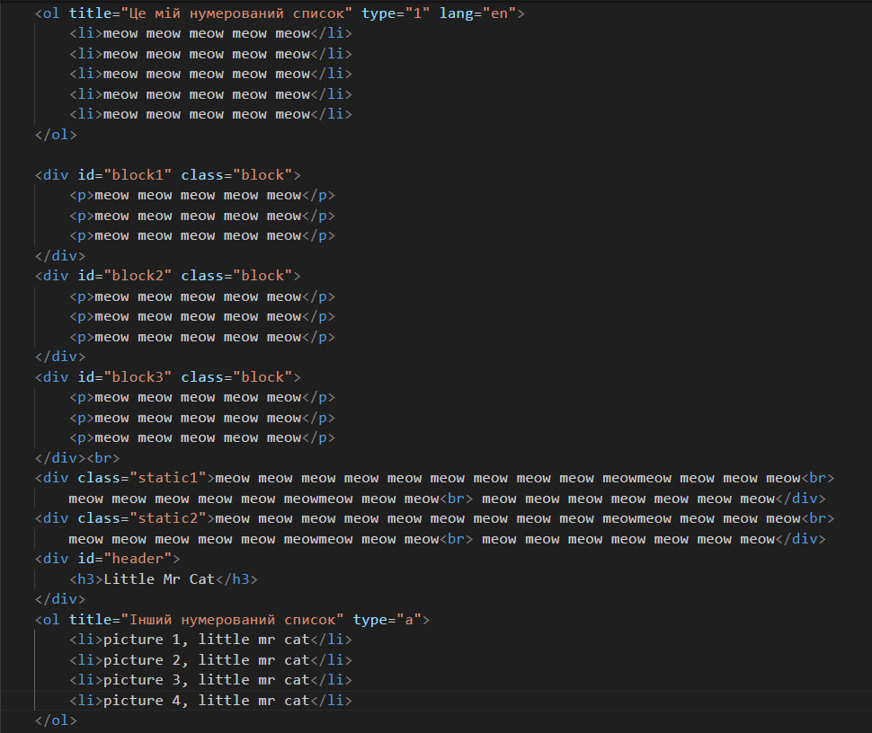 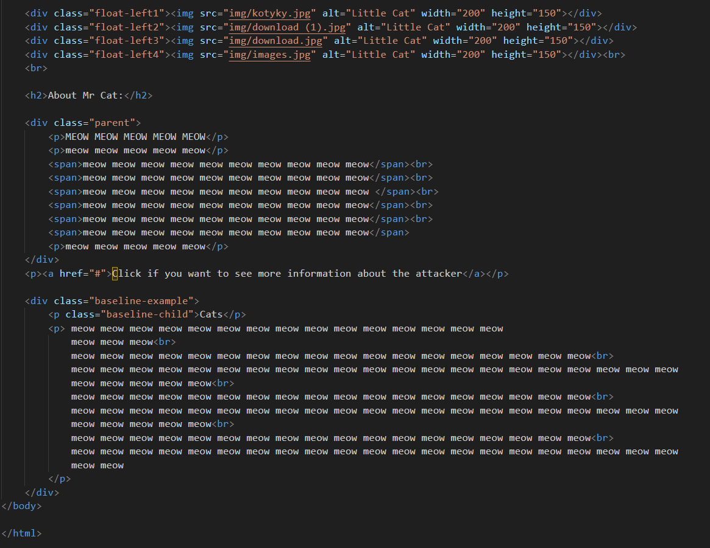
Навчилася cтворенню Web-сторінок зі списками та меню Web-проекту. Вивчення HTML тегів та правил CSS роботи
зі
списками та посиланнями.